Function Block Diagram (FBD)
ภาษา FBD มองโปรแกรม PLC เป็น "กล่องเชื่อมต่อกัน" คล้าย Datasheet ของวงจรดิจิทัล — เหมาะกับงานที่มีการคำนวณซับซ้อน, PID, หรือ Filter Lab นี้ใช้ Omron CP1L-E คู่กับ Temperature Controller E5EC-QR2ASM
FBD vs Ladder — ต่างกันยังไง
| Ladder (LD) | FBD | |
|---|---|---|
| หน้าตา | วงจรไฟฟ้า (Contact-Coil) | กล่องต่อสายกัน (Block-Wire) |
| ถนัดงาน | Logic, Sequence, Interlock | คำนวณ, PID, Filter, Signal processing |
| คนใช้ | วิศวกรไฟฟ้า | วิศวกรควบคุม, Process |
| การ Debug | ดู Animation สว่าง/ดับตาม Contact | ดูตัวเลขที่ไหลผ่าน Wire |
หน้าตา FBD เปรียบเทียบ Ladder
ใบงานปฏิบัติการ — Omron CP1L-E + E5EC-QR2ASM
Lab นี้ใช้ PLC Omron CP1L-E (ไม่ใช่ FX5U) เพราะ CX-Programmer ของ Omron มี FBD editor ที่เหมาะกับการเริ่มเรียน — concept เหมือนกัน เปลี่ยนแค่ syntax

อุปกรณ์ที่ใช้
| อุปกรณ์ | หน้าที่ |
|---|---|
Omron CP1L-E | PLC หลัก (Master Modbus) |
Omron E5EC-QR2ASM | Temperature Controller (Modbus Slave) |
CX-Programmer | IDE ของ Omron สำหรับเขียน Ladder/FBD/ST |
| RS-485 Cable | เชื่อม PLC ↔ Controller |
เริ่มเขียน FBD ใน CX-Programmer
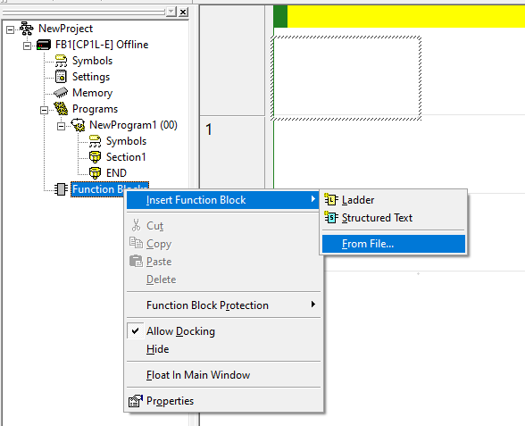
Function Blocks เพื่อ Insert FB (Ladder, Structured Text, หรือ From File)-
สร้าง Project ใหม่
File → New→ เลือก Device Type: CP1L-E → กด Settings → ตั้ง CPU Type ให้ตรงกับตัวจริง (เช่น CP1L-EM30DR-D) -
เพิ่ม FB Definition
คลิกขวาที่
Function Blocksใน Project tree →Insert Function Block → Ladder(หรือ Structured Text ก็ได้ — เลือกได้ภายหลังจะทำต่อด้วยภาษาไหน) -
กำหนด Input/Output ของ FB
ตั้งชื่อตัวแปร เช่น
- Input:
StartCmd : BOOL,SetPoint : REAL - Output:
HeaterOn : BOOL,ActualTemp : REAL - Internal:
Error : REAL,Integral : REAL
- Input:
- เขียน Logic ภายใน FB เลือกจากแถบ Toolbox: ADD, SUB, MUL, DIV, GT, LT, MOV ฯลฯ ลากเป็นกล่อง แล้วลากเส้นเชื่อม Input ของแต่ละกล่อง
-
เรียกใช้ FB ใน Main
เปิด
Section1ใน Main → ลากชื่อ FB ที่เพิ่งสร้างมาวาง → connect ตัวแปรจริงเข้ากับ I/O ของ FB
การสื่อสาร Modbus RTU กับ E5EC
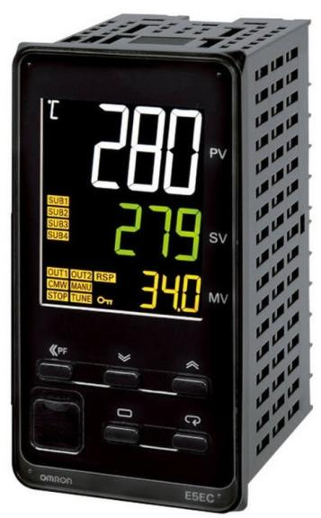
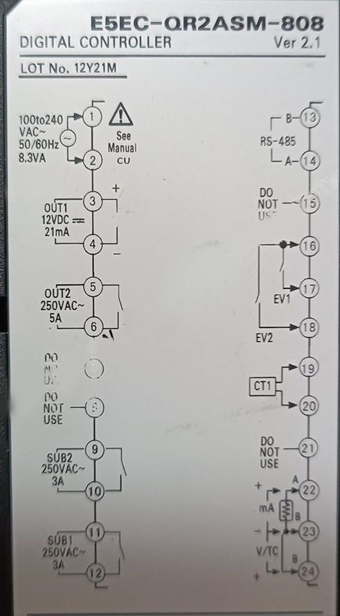
E5EC-QR2ASM รองรับ Modbus RTU ผ่าน RS-485 ที่ Function Code 0x03 (Read Holding Registers)
— Register ที่เราสนใจส่วนใหญ่:
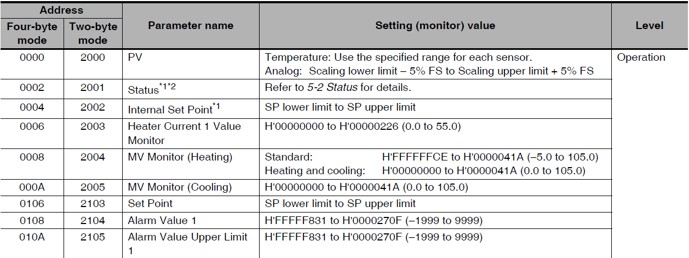
| Address (Hex) | ค่า | หน่วย |
|---|---|---|
0x0000 | Process Value (ค่าที่อ่านได้) | °C × 10 |
0x0106 | Set Point | °C × 10 |
0x0107 | Alarm Value 1 | °C × 10 |
0x0408 | Proportional Band (P) | %FS × 10 |
0x040A | Integral Time (I) | s × 10 |
0x040C | Derivative Time (D) | s × 10 |
250 จาก register = 25.0 °C
ตั้งค่า Modbus ที่ตัว E5EC
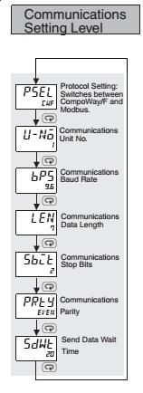
PSEL (Protocol) → U-No (Unit) → BPS (Baud) → LEN (Length) → SbtL (Stop bits) → PrtY (Parity) → SdWt (Send wait)-
เข้า Initial Setting Mode
กดปุ่ม
O(Mode) ที่หน้า E5EC ค้าง ~3 วินาที — จะเข้าสู่ Mode ตั้งค่า -
ตั้ง Communication Protocol
เลื่อนหา
CMWT→ ตั้งเป็น Modbus -
ตั้ง Unit Address
U-No= 1 (Slave address) -
ตั้ง Baud rate / Data bits / Parity
BPS= 9600 ·LEN= 8 ·PRTY= None — ต้องตรงกับฝั่ง PLC - Reboot E5EC ดับไฟ → เปิดใหม่ — ตอนนี้ E5EC พร้อมเป็น Modbus Slave แล้ว
FBD สำหรับ Read Temperature
โครงสร้าง FB ที่จะสร้าง:
Inputs
TriggerBOOLSlaveIDINTAddressINTLengthINT
Modbus Master Read
FC = 03 (Read Holding)
- ส่ง Request ตอน Trigger
- เก็บผลใน DataReg (INT)
DIV × 0.1
INT → REAL
- หาร 10 เพื่อแปลงเป็นองศา
Outputs
DoneBOOLErrorBOOLTemperatureREAL
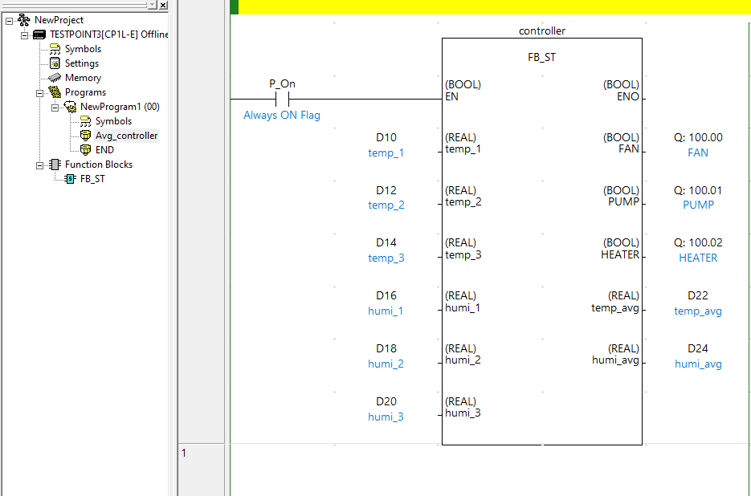
FB_ST รับ temp/humi 3 ช่อง คำนวณค่าเฉลี่ย และคุม FAN/PUMP/HEATERPseudo-code ของ FBD ด้านบนในภาษา Structured Text (ดูง่ายกว่าวาดเส้น):
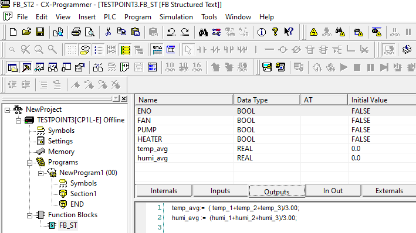
temp_avg := (temp_1+temp_2+temp_3)/3.00; — สั้นกว่าวาดด้วยบล็อกเยอะFUNCTION_BLOCK FB_ReadTemp
VAR_INPUT
Trigger : BOOL;
SlaveID : INT;
Address : INT;
END_VAR
VAR_OUTPUT
Done : BOOL;
Error : BOOL;
Temperature : REAL;
END_VAR
VAR
RawValue : INT;
END_VAR
ModbusMaster(
Trigger := Trigger,
Slave := SlaveID,
FuncCode := 3,
StartAddr := Address,
Length := 1,
Data => RawValue,
Done => Done,
Error => Error
);
IF Done THEN
Temperature := INT_TO_REAL(RawValue) * 0.1;
END_IF;Ladder จริงที่ใช้ในใบงานนี้
นอกจาก FBD ที่อธิบายมา — ใบงานยังมี Ladder ที่จัดการ Status/Error ของ Modbus Master ในตัว CP1L-E:
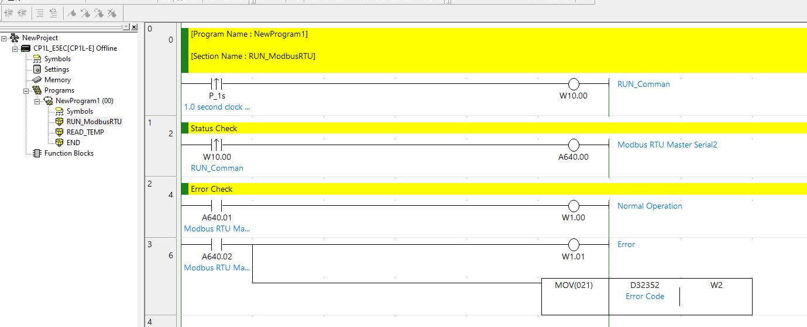
RUN_ModbusRTU — P_1s (1.0 second clock) → W10.00 (RUN_Comman), A640.00 = Modbus RTU Master Serial2 execution bit, A640.01 = Normal Operation, A640.02 = Error → MOV D32352 W2 เก็บ Error Code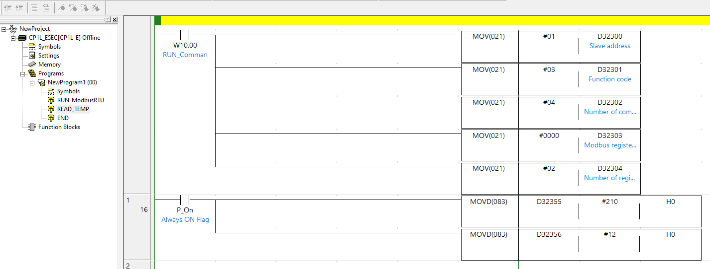
READ_TEMP — ใส่ Slave Address #01, Function Code #03, จำนวน Comm Data Bytes #04, Modbus Register #0000, Number of Registers #02 ลงใน D32300–D32304 ก่อน Trigger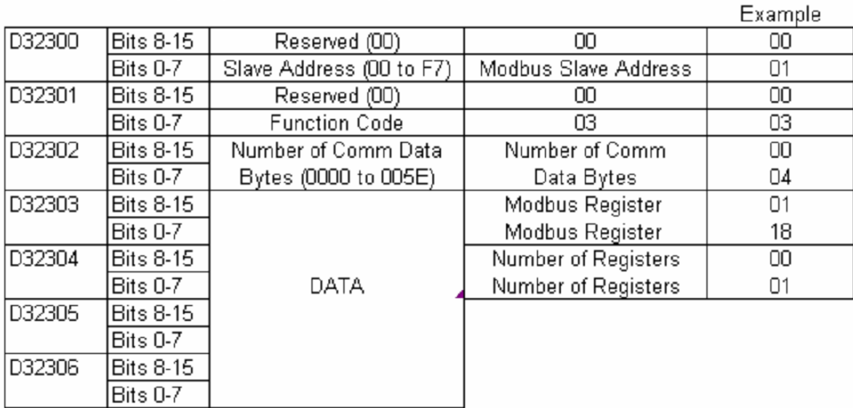
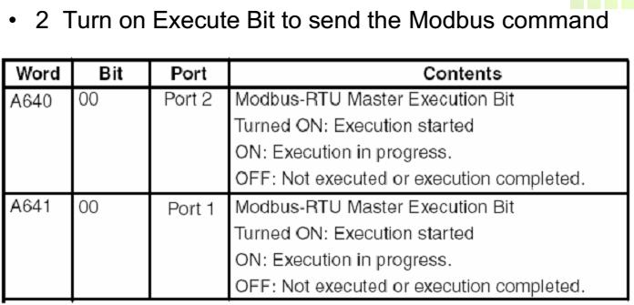
A640.00/A641.00 = Execution Bit ของ Modbus Master บน Port 2/Port 1 — ON เพื่อสั่งให้ส่ง commandโหลดโปรแกรมเข้า PLC
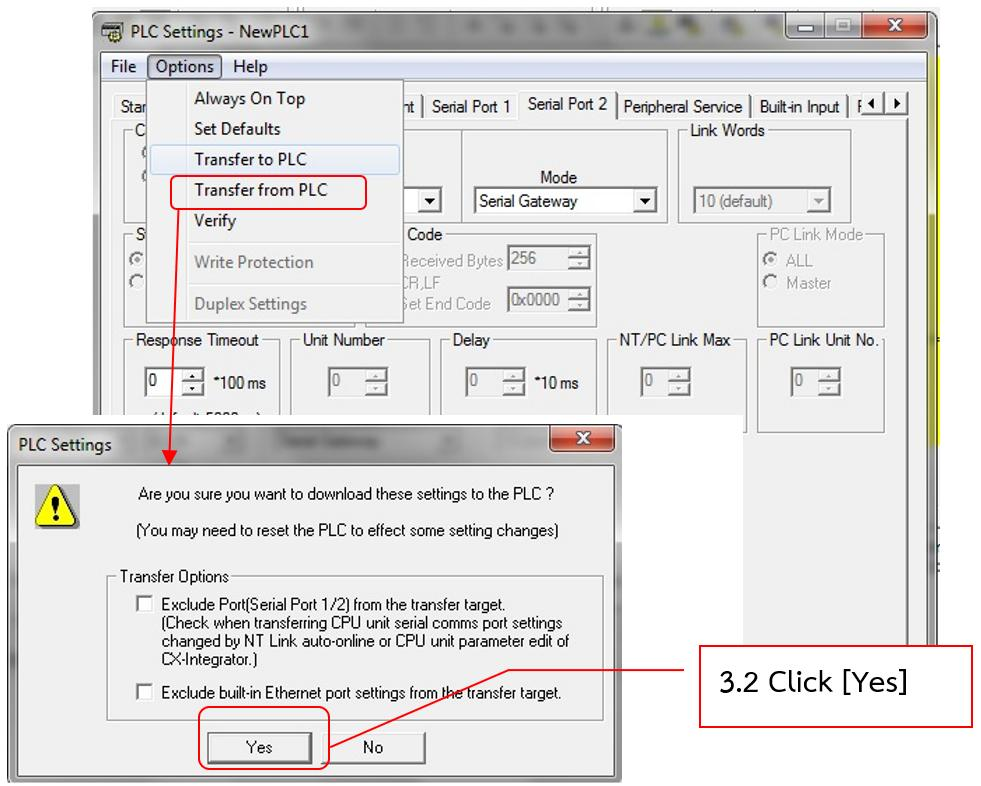
Options → Transfer to PLC → ยืนยัน "Are you sure you want to download these settings to the PLC?" → กด Yes — โปรแกรมจะถูก Download เข้า CP1L-Eทดสอบการอ่านค่า
-
ต่อสาย RS-485
ที่ E5EC ใช้ขั้ว
A(+)และB(−)— ที่ Omron CP1L-E ใช้พอร์ต RS-485 ของ Serial Option Board (CP1W-CIF11) ต่อ A ↔ A, B ↔ B และ Ground ร่วมกัน -
โหลดโปรแกรมเข้า PLC
PLC → Transfer → To PLC→ เลือก Program + IO Table + Settings -
Monitor ค่า
เปิด Watch Window → เพิ่ม
TemperatureและDone— ถ้าทุกอย่างต่อถูก ค่า Temperature จะอัปเดตทุก 1 วินาที (ตาม Trigger) -
ทดสอบเปลี่ยน Set Point
เขียน FB อีกตัวคล้ายกันแต่ใช้ FC=06 (Write Single Register) → register
0x0106ลองตั้ง 30.0 °C → ดูที่หน้า E5EC ว่าเปลี่ยนตามไหม
วิดีโอประกอบใบงาน FBD + Temperature
Lab นี้มีวิดีโอ Walkthrough 3 ตอน: